Prototipos
JavaScrip es un lenguaje con paradigma orientado a objetos, lo que implica que todo elemento generado es un objeto, desde los datos "string", "number", variables, todo los elementos en JavaScrip son objetos realmete, a su ves se trata de un lenguaje basado en prototipos, esto quiere decir que a la hora de crear un nuevo objeto este no se crea completamete desde cero, en su lugar JavaScrip utiliza como guía prototipos que se enceutran estructurados y definidos por defecto en el lenguaje.
Por lo tanto que JavaScrip sea un lenguaje basado en objetos los cuales a su vez se encuentran basados en prototipos.
Por ejemplo al imprimir un objeto en consola como en el siguite codigo, se pueden observar las propiedades que este posea, sin embargo tabien se puede observar la propiedad "__proto__ : object", el cual se trata del prototipo padre de todos los elemetos en JavaScrip, por lo tanto todos los elemtos sin imprtar su tipo poseen la propiedad "__proto__ : object"
Ejemplo

Resultado
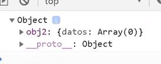
Por ejemplo, ya que este prototipo es poseido por todos los elementos JS, estos tambien pueden acceder a sus propiedades, al aplicar la propiedad "__proto__" en un elementos, este mostrara el tipo de prototipo del que se trata y dara acceso a todas las propiedades de este.
Ejemplo
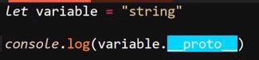
Resultado
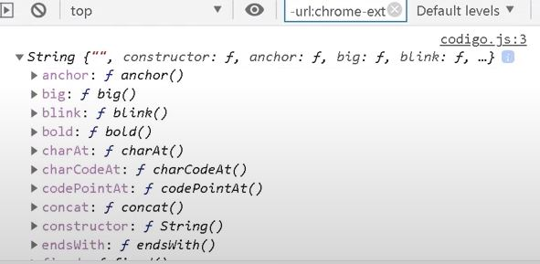
Nota: Asi como tambien a una asegunda propiedad __proto__ en la que se encuetra el prototipo padre como tal:
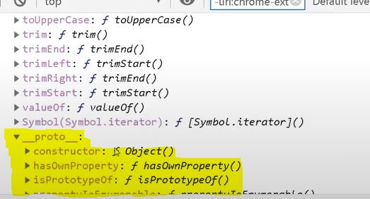
Se podria decir que todos los elementos heredan dos prototipos, el primero corresponde a el tipo de dato, mientras que el segudo corresponde al prototipo "object".
Es aqui donde entre el concepto de cadena de prototipos "prototype chain", en el cual realmete los elementos unicamete heredan un prototipo que corresponde a su tipo, sin embargo este prototipo a su vez hereda un segundo prororipo en el que este esta basado, y asi sucesivamente hasta llegar al "prototipo object" el cual es el padre de todos los otros prototipos existentes.
Nota: los tipo de datos "undefined" y "null" no poseen el prototipo object, ya que se tratan de valores nulos y si definir.
Crear un prototipo
Como ya se a indicado la gran mayoria de los elementos poseen prototipos para su creación, salvo algunos datos vacios que no los poseen, sin embargo tambien existen elemtos que pueden crear un prototipo completamete neuvo, estas son las funciones, la cuales no poseen un prototipo definido, si no que en su lugar lo generan dierectamete desde el prototipo "object".
Debido a que se trata de un nuevo tipo de prototipo que se esta generando la forma de acceder a esta es diferente, no se utiliza la propiedad "__proto__", en su lugar se utiliza la propiedad ".prototype", de la siguite forma:
Ejemplo
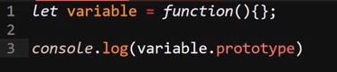
Resultado
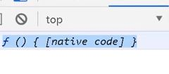
De este modo si se desea acceder al prototipo "object" de las funciones se realiza de la siguite forma: "
Ejemplo
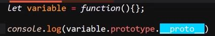
Resultado
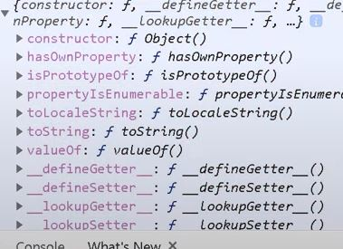
Caracteriticas
-
Un prototipo creado atravez de funciones se denomina como mutable
-
Los prototipos en si tambien son objetos, pueden poseer propiedades y funciones
-
Tiene una insidencia fisica real en la memoria, es decir esta incorporado a nivel de hardware en la memoria
-
Puede ser llamado y modificado
-
Puede ser visto modelo ejemplar decendiente del modelo "objeto"
-
Un objeto hereda propiedades (valores y metodos) de su prototipo
Sobrescribir __Proto__ vs Sobrescribir método
Los objetos tambien tienen prototipo, de hecho este prototipo se puede modificar en función de los metodos o funciones que se definana al objeto, por lo tanto tambien hace posible el controlar como se modifica el prototipo.
De hecho existe una diferencia entre modificar alguno de los metodos definidos para el objeto que ha sido creado y Sobrescribir los prototipos sobre lo que esta basado el objeto
Ejemplo
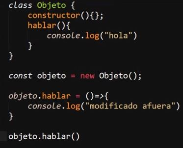
Por ejemplo en este caso se genera una clase para crear un objeto llamado "Objeto", el cual tiene un metodo llamado "hablar", luego de haber sido definida la clase se genera el objeto y luego se modifica el valor de la clase "hablar", realmente en este caso no se esta modificado el valor del metodo hablar, si no que en su lugar se esta añadiendo una segundo metodo al objeto igualmete llamado "hablar".
Esto acurre ya que los metodods definidos dentro de la clase que genera el objeto se guardan dentro del prototipo, mientras que la segunda clase "hablar", la cual esta siendo generada fuera de este se guarda como un metodo del nuevo objeto recien creado.
Por otro lado si lo que se desea es modificar el metodo original llamado "hablar", el cual se encuetra guardado dentro del prototipo lo que se debe hacer es llamar al metodo directamete desde el prototipo y de ese modo aplicarle los cambios en cuestión como en el siguiente ejemplo.
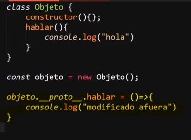
De este modo los cambios en ves de generar un nuevo metodo lo que hacen es sobre escribir el genero directamete desde el prototipo.
Heredar un metodo del prototipo
Es posible utilizar los prototipos para que un elemento herede un metodo que originalemte no deberia podes usar, esto se logra acediendo al prototipo del metodo que se desea que reciba la herencia y se iguala al prototipo del metodo que se desea aplicar, tal y como se realiza en el siguite ejemplo
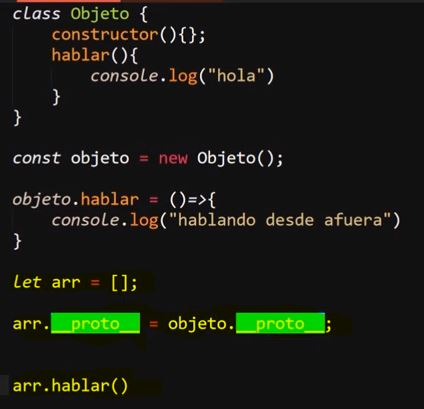
Ejemplo en el que se genera el objeto "Objeto", pero se desea que sus metodos puedan ser utilizados por el array "arr", en este caso para lograr esto se accede tanto al prototipo del objeto como del array, se igualan ambos protptipos y de ese modo el array podra hacer uso del metodo del objeto, esto ya que el prototipo del array esta heredando el prototipo del objeto
De ese modo se ignora el segundo metodo "hablar" que se ha generado fuera del prototipo, y en su lugar el array hereda el metodo "hablar " que se define dentro de la clase, por lo tanto esta guardado dentro del prototipo, razon por la cual el resultado del codigo anterior es:

Nota: Si se da el caso de necesitar aceder al prototipo de un objeto se realizara desde el metodo "__proto__"